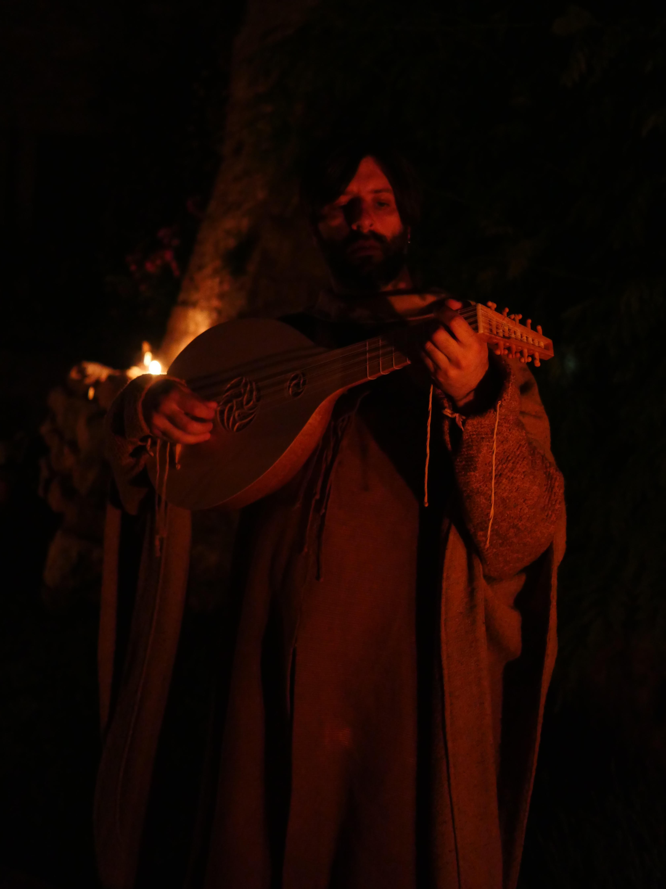
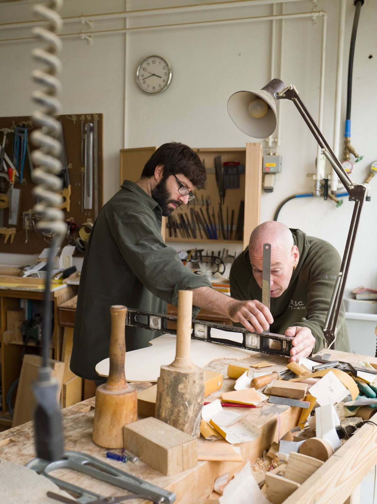

Jacob Mariani is a musicologist, performer, and maker of historically-inspired instruments. He was recently awarded a prestigious Clarendon Scholarship to pursue doctoral research the University of Oxford. Jacob holds an MA in Musicology from the University of Oregon, and an MA in Early Music Performance from the Schola Cantorum Basiliensis, where he studied with Professors Randall Cook, Crawford Young, and Marc Lewon.
Jacob Mariani began his luthier studies in Ashland, Oregon with Stephen Bacon, who is the curator of the Schumann Collection of historical instruments and Master Luthier at Bellwood Violin. In Eugene, Oregon, he worked for Master Luthier Charlie Ogle, and more recently, Jacob spent several months collaborating with Richard Earle in his Basel workshop. He has researched, designed, and built instruments for performers all over the world.
